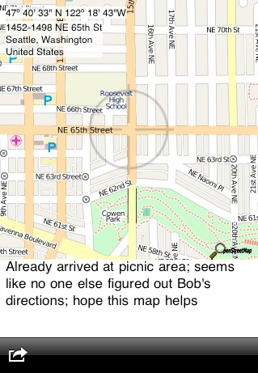

The Rockhold Company
Aktuala Loko
Current version: 1.0
Platforms: iPhone and iPod touch
OS version: 3.0 or newer
Price: $0.99
Application Description
Where are you, right now? And can you show me how to get to where you are? Sometimes the simplest thing is to just show your friends a map, with your current location at the exact dead center. With Aktuala Loko, you can just tweet your current location. Now your followers can really follow you.
Features
-
High-quality map images from the Open Street Map project
-
Configurable choice of services to which your map images may be uploaded, including Twitpic, Twitgoo, and Posterous
-
Exactly coordinates and current street address are automatically pasted into your tweeted map, for even more help to your eager followers
-
Status tweets are automatically geotagged, for those twitter clients that can make use of location coordinates (remember to enable geotagging in your Twitter settings!)
-
Tweeted map images are JPEG format, complete with embedded location coordinates; import your maps into Flickr or iTunes and see all the places you’ve been
Please contact support@rockholdco.com for help with Aktuala Loko or technical support.


Copyright 2011, The Rockhold Company, LLC. All rights reserved.